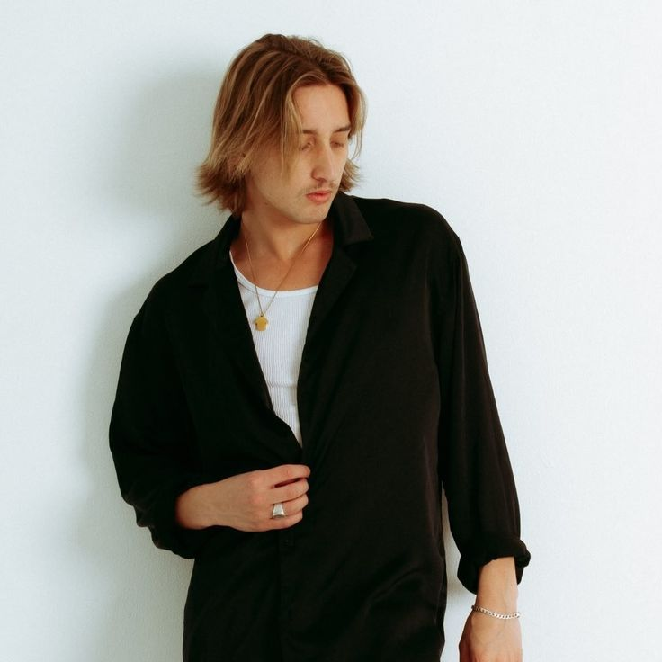

Meet the Members!

Mitchel Cave
Lead vocalist and programmer, born on December 2, 1996. Before forming Chase Atlantic, he was part of the boy band What About Tonight.

Christian Anthony
Rhythm guitarist, lead vocalist, and programmer, born on September 3, 1997. He also participated in The X Factor Australia in 2012.
Clinton Cave
Lead guitarist, tenor saxophonist, and backing vocalist, born on July 4, 1993. He first gained recognition through his YouTube music covers.